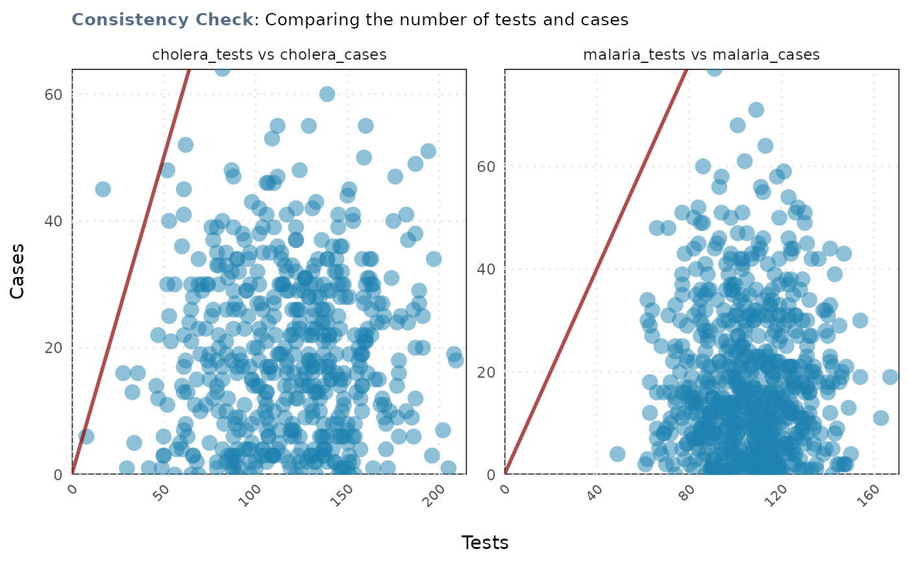

This function performs a consistency check to ensure that the number of tests
is greater than the number of cases for given columns in a dataset. It
returns a ggplot2 object visualizing the results.
Arguments
- data
A data frame containing the test and case data.
- tests
A character vector specifying the column names for the test data.
- cases
A character vector specifying the column names for the case data. The length of 'tests' and 'cases' must be the same, and each element in 'tests' corresponds to an element in 'cases'.
Value
A ggplot2::ggplot() object showing
the consistency between the number of tests and cases. The x-axis represents
the cases, and the y-axis represents the tests. Each facet represents a
disease, and the diagonal line shows where the number of tests equals the
number of cases.
Examples
# check the consistency between malaria tests and cases
# get path
path <- system.file(
"extdata",
"fake_epi_df_togo.rds",
package = "epiCleanr")
fake_epi_df_togo <- import(path)
#> Warning: Missing `trust` will be set to FALSE by default for RDS in 2.0.0.
consistency_check(fake_epi_df_togo,
tests = c("malaria_tests","cholera_tests"),
cases = c("malaria_cases", "cholera_cases"))
#> Consistency test passed for malaria_tests vs malaria_cases: There are more tests than there are cases!
#> Consistency test failed for cholera_tests vs cholera_cases: There are 1 (0.11%) rows where cases are greater than tests.
